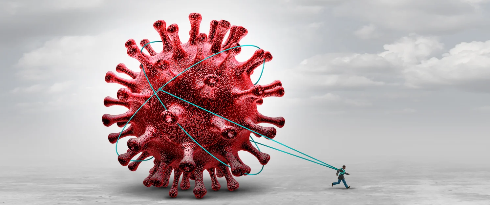

Introduction
Long Covid

Summary of Long Covid
COVID-19, the infectious disease originating from the SARS-Cov-2 virus, was declared a global pandemic in March of 2020. As the illness spread, affecting thousands of people worldwide, a multitude of individuals started reporting lasting symptoms after being cleared of the disease. These varying degrees of symptoms after an extended period of time can be classified as long covid. Specifically, “Long COVID is an often debilitating illness that occurs in at least 10% of severe acute respiratory syndrome coronavirus 2” Davis et al. (2023). Those who have reported long covid face a variety of symptoms ranging from heart, lung, pancreas, immune, and neurological diseases, as well as chronic illnesses. Additionally, those in existing vulnerability groups such as those with type two diabetes, those of the female sex, and those with an autoimmune disease to name a few, are also more susceptible to long covid Davis et al. (2023).
Why is it Important?
The study and analysis of long covid across demographics in the United States is vital due to the recency of the pandemic as well as the lack of outreach and knowledge regarding this topic. It is both the biomedical community as well as the public that currently have little knowledge about long covid, the possible symptoms, the vulnerable groups, and the current research in the field Sudre et al. (2021).
Why should you continue reading?
Given the lack of public knowledge and the widespread impending issue of managing the lasting effects of COVID-19, the study of long covid is essential now more than ever. At the moment, the scientific research in this area is still new and developing, meaning that findings have not made headway for the general audiences. Additionally, there have been very few social science perspectives published regarding the impact of long covid symptoms on the people’s lives, the coverage of this illness in the public health and government sectors, or the conversations surrounding this topic in the media. These are topics of conversation which this project hopes to uncover.
Past works:
As previously mentioned, there is still limited research published surrounding long covid in academic and scientific journals. However, the current published works provide a plethora of information surrounding noted symptoms, sentiments on long covid, and more.
The authors of Long COVID: major findings, mechanisms and recommendations compiled the findings of several COVID-19 research papers as well as collected data from long covid researchers and clinics in order to create a list of long covid symptoms. Additionally, the authors noted a few challenges in their collection process, one of those being the lack of uniformity in testing, especially during the early stages of COVID-19. They also noted that several non-respiratory symptoms go unlabeled as potential long covid symptoms due to the narrative that COVID is only a respiratory illness Davis et al. (2023). With that being said, the work of Davis et al. (2023) on the topic provides a strong base understanding of long covid and the future research that is needed.
In conjunction with the previous research, the authors of Attributes and predictors of long COVID continued research on the documented symptoms of long covid across multiple demographics (age, race, location, sex, etc.) and created a random forest predictive model in order to make predictions on symptoms on specific demographics. The primary source of their data was from “The COVID Symptom Study is a mobile application” which allows users to self-report “daily information on their health status and symptoms, as well as results of any available COVID-19 test” Sudre et al. (2021). Thus, while they were able to provide an extensive analysis of symptoms, this data is only a small subset of the population using the application.
What am I exploring?
For this project, I would like to focus on creating a succinct understanding of long covid, the demographics affected, and the current knowledge base and media presence in order to provide this information to the public. Through data gathering, exploratory analysis, visualizations, modeling, and text analysis, I plan to answer a myriad of questions surrounding long covid and present the current information base in a way that is transparent and accessible.
Questions to Address:
How does gender and age affect one’s chances of experiencing long covid symptoms?
Does pre-existing chronic illnesses make one more prone to experiencing long covid symptoms?
In what ways does race affect the persistence of long covid symptoms?
How might the existing research on long covid symptoms be skewed to the discussion of respiratory illnesses?
What is the most common collection of symptoms present in someone with long covid?
What is the sentiment of current media on the topic of long covid?
Is the sentiment on long covid in the media negative is comparison to other infectious diseases?
What symptoms are highly correlated with each other?
Can symptoms be used to predict a patient’s demographic information?
What is the government opinion on the state of long covid research/information through their public responses?
Goals and Hypotheses:
Through this study of long covid across a multitude of demographics, I hope to answer the above questions as well as provide a concise and coherent way to view information on long covid.
As of now, I would say that minority and marginalized communities are grappling with heightened and more prolonged experiences of long COVID. This stems from the accessible public information tailored to these populations, a lack of education targeted at addressing their specific needs, and a notable absence of government assistance for individuals struggling with chronic health issues resulting from the enduring effects of COVID-19. The amalgamation of these factors appears to contribute to a scenario where these already disadvantaged groups encounter more pronounced challenges in coping with the aftermath of the pandemic.